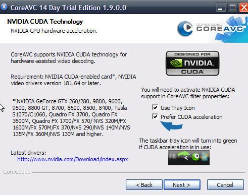
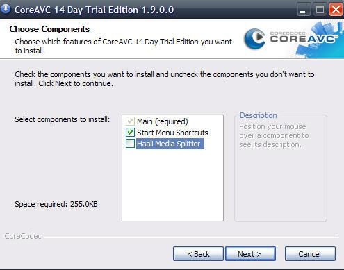
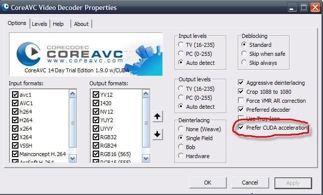

CoreAVC is a very fast decoder for h.264 HD-videos, however it is not for free. You can get a trial version which is valid 14 days to see if the transcoding of h.264 HD-videos benefits from performance tuning.
First of all you have to disable decoding for h.264 in ffdshow. If you have installed k-lite codec pack, go to Windows start menu "programs > K-Lite Codec Pack > Configuration > ffdshow video decoder". Select menu "Codecs" on the left side and change format H.264/AVC from "libavcodec" to "disabled" and press OK.
Now you can install CoreAVC:


Haali Media Splitter is already included in codec packs and therefore doesn't have to be installed once again.
You should enable CUDA if possible. Go to the Windows start menu "programs > CoreCodec > CoreAVC > Configure CoreAVC". Check "Prefer CUDA Acceleration" and press OK. Please consider that CUDA is only available for NVidia based graphics cards. You also have to install an up to date driver (at least version 181.64!).
There is no GPU-support planned in ffdshow. So CoreAVC is the best choice for transcoding performance at the moment.
